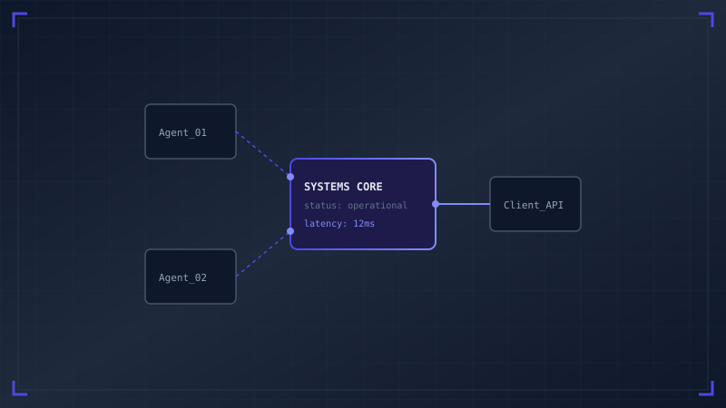

1. 문제 정의
서비스 규모가 확장되면서 동시 접속자 수가 급격히 늘어났습니다. 이전까지 구축되어 있던 인증 서버 구조는 RDBMS 기반의 세션(Session) 조회 방식을 고수하고 있었습니다. 이러한 구조는 다음과 같은 세 가지 주요 한계점을 낳았습니다.
1.1 기존 아키텍처의 한계
RDBMS 중심 세션 검증은 매 요청마다 데이터베이스 커넥션을 낭비하게 하여 병목 현상을 유발합니다. 특히 부하 분산(Load Balancing) 환경에서 고정 세션(Sticky Session)을 사용하지 않는 한, 데이터베이스의 디스크 I/O가 포화 상태에 이르는 주요 원인이 되었습니다.
1.2 상태성 문제와 확장성
세션 클러스터링(Session Clustering)을 적용하더라도 각 웹 서버 간의 동기화 패킷 오버헤드가 발생하여 수평 확장(Scale-Out)의 장애물로 작용했습니다. 그리하여 무상태(Stateless) 아키텍처로의 전환이 필연적이었습니다.
2. 고려한 선택지
이 상태를 해결하기 위해 엔지니어링 파트에서 고려한 인증 아키텍처 후보군은 다음과 같았습니다.
2.1 JWT 비대칭키 검증 (RS256)
인증 기관(Auth Server)에서 비밀키(Private Key)로 JWT를 서명하고, 각 게이트웨이 및 개별 마이크로서비스가 공개키(Public Key)를 활용해 서명을 검증하는 무상태(Stateless) 방식입니다. DB 접근이 아예 배제되어 응답 속도가 월등히 빠르다는 장점이 있습니다.
2.2 분산 Redis 세션 저장소
메모리 기반 키-값 저장소인 Redis 클러스터에 세션 상태를 저장하는 구조입니다. 기존 레거시 비즈니스 로직을 대대적으로 개편하지 않아도 된다는 이점이 있지만, 여전히 네트워크 요청 홉(Hop)이 추가된다는 단점이 있습니다.
3. 설계 결정
분석 결과, 두 방식의 장점을 합친 하이브리드 토큰 검증 모델을 채택하기로 결정하였습니다. 기본 검증은 공개키를 활용한 무상태 JWT 분석을 따르되, 실시간 블랙리스트 차단이 필요한 경우에 한하여 게이트웨이 레벨에서 Redis 캐시 필터를 적용하는 방식입니다.
3.1 하이브리드 토큰 검증 모델
이를 통해 대부분의 정상 트래픽은 데이터베이스나 캐시를 건드리지 않는 순수 인메모리 CPU 서명 검증만으로 통과하게 되어, 인증 지연 시간(Latency)을 마이크로초 단위로 줄일 수 있게 설계했습니다.
const jwt = require('jsonwebtoken');
const localKeyCache = new Map();
async function verifyToken(token) {
try {
const decodedHeader = jwt.decode(token, { complete: true });
if (!decodedHeader) throw new Error("Invalid JWT Format");
const kid = decodedHeader.header.kid;
let publicKey = localKeyCache.get(kid);
if (!publicKey) {
// Fetch public key from JWKS endpoint
publicKey = await fetchPublicKeyFromJWKS(kid);
localKeyCache.set(kid, publicKey);
}
// Verify signature using the public key
return jwt.verify(token, publicKey, { algorithms: ['RS256'] });
} catch (error) {
console.error("Token verification failed:", error.message);
throw error;
}
}4. 구현 및 검증
로컬 환경 및 모의 스테이징 환경에서 벤치마킹을 실행하여 아키텍처를 실효 검증하였습니다.
4.1 벤치마킹 환경 구성
부하 테스트 도구(k6)를 활용하여 가상 사용자 10,000명이 동시에 요청을 전송하는 시나리오를 설계해 테스트를 10분간 연속 구동했습니다.
| 측정 지표 (Metric) | 기존 RDBMS 세션 방식 | 분산 Redis 세션 방식 | 하이브리드 JWT 방식 (제안) |
|---|---|---|---|
| 평균 응답 속도 (Latency) | 142ms | 24ms | 3.2ms |
| 초당 처리량 (Throughput) | 850 rps | 4,100 rps | 18,500 rps |
| 인증 병목 발생 유무 | 매우 높음 (DB 포화) | 낮음 (네트워크 대역폭) | 없음 (CPU 바운드) |

import redis
r = redis.Redis(host='localhost', port=6379, db=0)
def is_token_blacklisted(jti: str) -> bool:
"""
Check if JWT identifier (jti) exists in Redis blacklist.
If exists, the token was revoked before expiration.
"""
try:
val = r.get(f"blacklist:{jti}")
return val is not None
except redis.RedisError as e:
# Fallback gracefully if Redis is down, but raise alerts
print(f"Redis connection failed: {e}")
return False5. 결과와 기술 인사이트
최종적으로 하이브리드 아키텍처를 적용한 뒤, 인증 서버의 인스턴스 개수를 대폭 낮추고도 더 유연하게 웹 스케일을 처리할 수 있게 되었습니다. 이번 설계를 통하여 얻은 핵심적인 인사이트는 다음과 같습니다.
- 기술 격리를 통한 복잡도 감소: 개별 마이크로서비스는 단순 공개키 서명 일치만 보며, 블랙리스트 확인은 API 게이트웨이에서 일임함으로써 비즈니스 레이어의 결합도를 완벽히 격리하였습니다.
- 인스크립트 검증과 무상태 보장: 분산 분기 환경에서 중앙 집중화된 상태 저장소에 질의하는 빈도를 최소화할수록 수평적 시스템 확장이 극도로 원활해집니다.
티스토리 댓글 영역이 들어올 자리
티스토리 스킨으로 변환 시 [##_comment_group_##] 치환자 태그로 자동 치환되는 마크업 영역입니다.